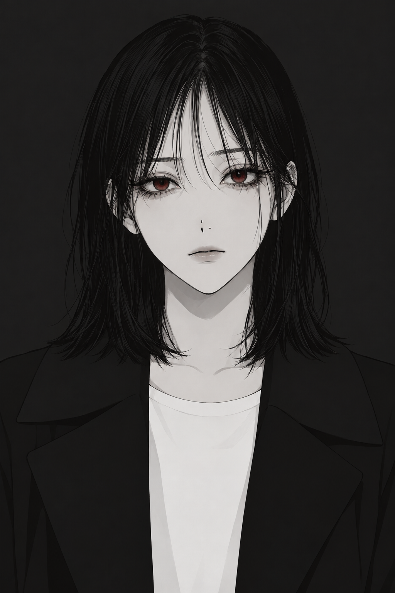

A MONOCHROME HORROR STORY
아무도 떠나지
않은 집.
철거까지 남은 시간, 하룻밤.
돌아온 집에는 내 이름의 유품이 남아 있었다.
잔류 — 마지막 입주자 탐색 프로토타입 · 00
月桂 APARTMENT
101
1998. 11. 04 월계아파트 · 철거 전야
월계아파트 / 1층
중앙 복도
관리실에서 보관함을 찾으세요.
E
WOLGYE APARTMENT 01F
A MONOCHROME HORROR STORY
철거까지 남은 시간, 하룻밤.
돌아온 집에는 내 이름의 유품이 남아 있었다.
잔류 — 마지막 입주자 탐색 프로토타입 · 00
월계아파트 / 1층
관리실에서 보관함을 찾으세요.

11월 4일 수요일